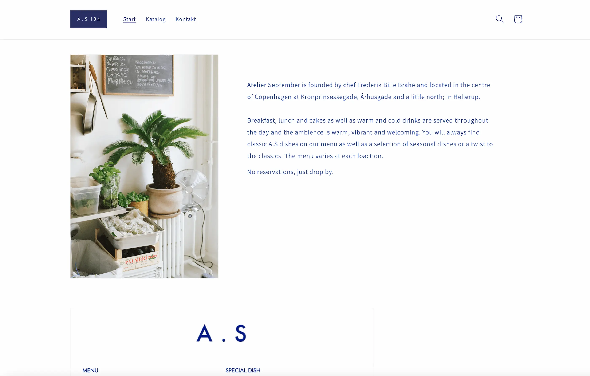

TEMA 5 - Grundlæggende Indhold
I tema 5 lavede vi to opgaver. I den første opgave, "05.01.01 videosite" lavede jeg et responsivt website med emnet: Passion. Hvor fokus var inden for lyd- og videoteknik samt redigering, som blev udført ved hjælp af Premiere Pro. Den anden opgave var et gruppeprojekt: "05.02.01 virksomhedssite”. Her valgte vi selv en virksomhed, hvor vi udførte et redesign af virksomhedens website og skabte indhold i form af video og fotos.
Temaopgave
05.01.01 Videosite
05.02.01 Virksomhedssite
Opgavebeskrivelse
I opgaven "05.01.01 videosite" blev vi opdelt i grupper af to til at filme og interviewe en person om
deres
passion. Efterfølgende redigerede vi individuelt en video der skulle have en varighed på et minut og
skulle inkludere b-klip. Videoen blev lavet Premiere Pro, og videoen blev efter vist på mit
videosite.
I opgaven ”05.02.01 virksomhedssite” blev vi opdelt i grupper af 4 hvor vi kontaktede en virksomhed
med
henblik på at skabe en video og lave et redesign af deres eksisterende hjemmeside. Vi fik lov til at
lave dette for Atelier September, som er en cafe der ligger flere steder i Københavnsområdet. Vi
lavede en video hvor der indgik et interview med manageren af en af deres caféer, en video til SOME,
en ny opdateret hjemmeside og et procesdokument, der dokumenterede vores fælles research,
idéudvikling, designproces osv. Vi holdt overblik og god kommunikation igennem daglige scrum-møder
og holdt vores Trello-board opdateret.
Efter afleveringen af opgaven afholdt vi en præsentation, hvor vi pitchede projektet for et lille
hold.
Moodboard
Styletile
Redesignet website eksempel 1
Redesignet website eksempel 2
Eksisterende website eksempel 1
Eksisterende website eksempel 2